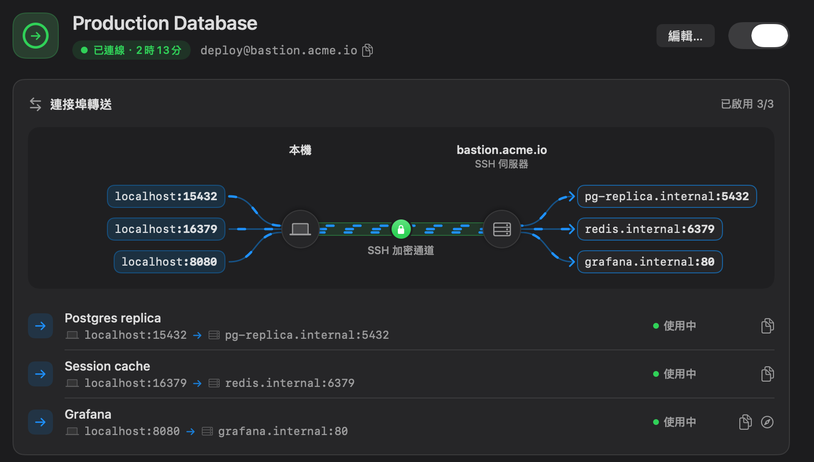
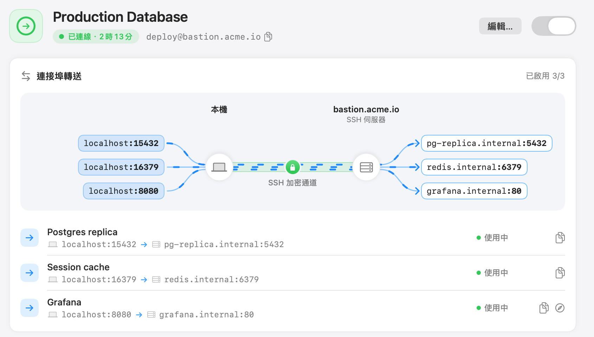

Porthole 舷窗：Apple 晶片原生的 SSH 通道管理工具
為 Apple 晶片打造的 SSH 通道管理工具。
把伺服器後面的資料庫、監控面板和內部網站，接到你 Mac 的本機連接埠上。
- macOS 14 以上
- Apple 晶片
- 10 種介面語言
- 在 GitHub 開源
-
App 連到本機連接埠
資料庫用戶端、瀏覽器和腳本照常連線到
localhost:15432。對它們來說，服務就在這台 Mac 上。 -
所有規則共用一條加密連線
Porthole 呼叫 macOS 內建的 OpenSSH，同一條通道裡的規則走同一個 ssh 連線。斷線後依 2、4、8…30 秒逐步重試，Mac 從睡眠中喚醒後也會主動重新整理。
-
伺服器替你連進內部網路
流量從
bastion.acme.io出去，再前往只有它才能存取的位址：資料庫副本、Redis 和 Grafana。

App 連到本機連接埠
資料庫用戶端、瀏覽器和腳本照常連線到
localhost:15432，就像服務在這台 Mac 上。所有規則共用一條加密連線
Porthole 呼叫 macOS 內建的 OpenSSH；斷線自動重新連線，Mac 喚醒後主動重新整理。
伺服器替你連進內部網路
流量從 SSH 伺服器出去，再前往只有它才能存取的位址。
三種轉送規則
一條通道裡可以放多條規則，類型隨時可以切換。下面的圖示和 Porthole 編輯器裡的一樣。
在本機連接埠存取遠端服務
本機 App 連線到 localhost:5432，流量經 server.example.com 轉送，再由它連到 db.internal:5432。適合資料庫、Redis 和內部監控面板。
ssh -N -L 5432:db.internal:5432 server.example.com將本機服務分享給伺服器
server.example.com 在連接埠 8080 上監聽，那裡收到的連線會經通道回到本機，再連到 localhost:3000。適合把開發中的網頁給同事看，或接收 webhook 回呼。
ssh -N -R 8080:localhost:3000 server.example.com透過伺服器上網
本機在 localhost:1080 上執行 SOCKS4/5 代理伺服器。把瀏覽器或 App 指向它，所有連線都會從 server.example.com 出去，適合存取只對伺服器開放的網站。
ssh -N -D 1080 server.example.com
顏色就是狀態
每條通道畫成一個領結：左邊是本機這一側的位址，右邊是伺服器那一側，所有規則匯入中間同一條 SSH 加密通道。實心標籤是接收連線的監聽連接埠，空心標籤是最終抵達的位址。
- 本機轉送
- 遠端轉送
- SOCKS 代理
- 正在連線
- 未連線
通道中間的鎖在連上時變綠，失敗時變成紅色的 ✕。經由代理伺服器或跳板機時，通道下方會標出「經由 …」。

安全、穩定，也不打擾
- 密碼只放在鑰匙圈
- 登入密碼、私密金鑰密語、代理伺服器和跳板機的密碼都只存在 macOS 鑰匙圈裡。設定檔和匯出檔案都不含密碼。
- 新伺服器先核對指紋
- 第一次連線時顯示伺服器的指紋，經你確認後才連線。主機金鑰一旦變更，一律拒絕。
- 代理伺服器與跳板機
- 可以經由 SOCKS4、SOCKS5、HTTP 代理伺服器（支援使用者名稱和密碼）或跳板機（ProxyJump）連到伺服器。
- 斷線自動重新連線
- 依 2、4、8、16、30 秒逐步拉長間隔重試；Mac 從睡眠中喚醒、網路恢復後會自動重新整理通道。
- 連接埠被占用，直接告訴你是誰
- 連線前先檢查本機連接埠，被占用時指出是哪個程序和它的 PID，不必再去翻
lsof。 - 不留殘餘程序
- Porthole 意外結束後留下的 ssh 程序，會在下次啟動時自動清理。
- 讀得懂
~/.ssh/config - 自動登入會用上 ssh-agent 和你既有的金鑰；含轉送設定的 Host 項目可以直接匯入成通道。
- ssh 指令一目了然
- 編輯器裡即時預覽完整的 ssh 指令，也可以一鍵拷貝到終端機裡使用。
- 10 種介面語言
- 繁體中文、简体中文、English、日本語、한국어、Deutsch、Français、Español、Português、Русский，可跟隨系統或個別指定。
- 淺色、深色、跟隨系統
- 用工具列按鈕、選單列面板或 ⇧⌘D 隨時切換，所有視窗和對話框一起變。
從 SSH Tunnel 搬過來
Codinn 的 SSH Tunnel 只有 Intel 版本，在未來的 macOS 上將無法執行。Porthole 的功能與它對齊，並能直接匯入它的匯出檔案。
- 在 SSH Tunnel 裡全選通道，選擇 File ▸ Export Selected Tunnels… 匯出。
- 在 Porthole 裡選擇 檔案 ▸ 匯入通道…（⇧⌘I），選取剛才的檔案。
- 匯出檔案不含密碼。第一次連線時輸入一次，勾選「儲存到我的鑰匙圈」，之後就不用再輸入。
下載 Porthole
1.0.0
下載 zip- 系統需求
- macOS 14 Sonoma 或更新版本，Apple 晶片（M 系列）
- 原始碼
- github.com/bryan31/porthole（MIT 授權）
- 發布日期
- 2026-11-26
- SHA-256
-
697bc77d141e89e911210e3e66555268139e87e73b49bc40207f2b5a9a1430f6
安裝
-
解壓縮，拖進「應用程式」
按兩下下載的 zip，把 Porthole.app 拖到「應用程式」檔案夾。
-
第一次打開
Porthole 尚未經過 Apple 公證，第一次打開時 macOS 會擋下它。打開 系統設定 ▸ 隱私權與安全性，在「安全性」一欄找到關於 Porthole 的提示，按一下「強制打開」並確認。之後就能正常打開了。
熟悉終端機的話，也可以直接移除隔離標記：
xattr -dr com.apple.quarantine /Applications/Porthole.app -
建立第一條通道
按 ⌘N，填好伺服器和要轉送的連接埠，按一下「建立並連線」。詳細步驟請見使用說明。
校驗下載的檔案：shasum -a 256 ~/Downloads/Porthole-1.0.0.zip，輸出應與上面的 SHA-256 一致。